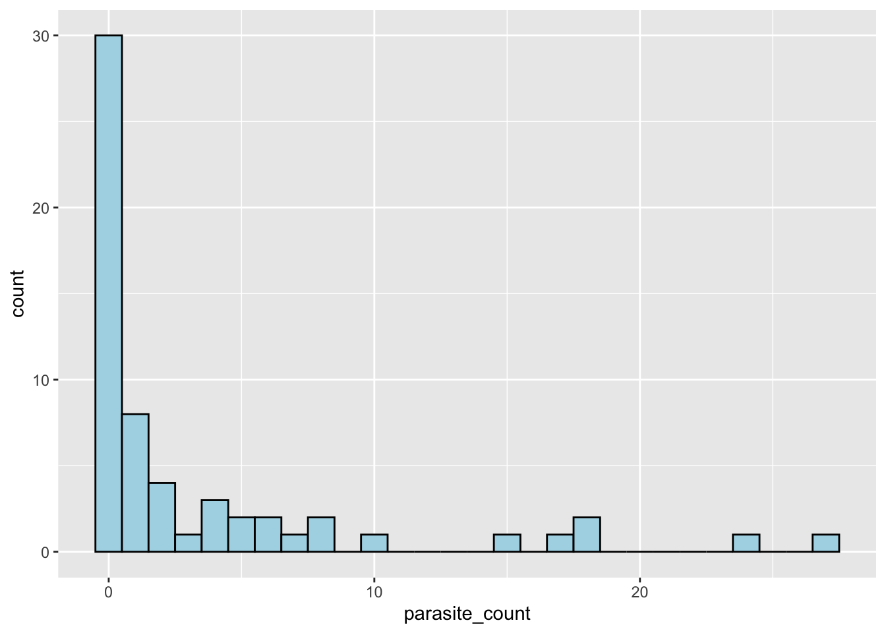
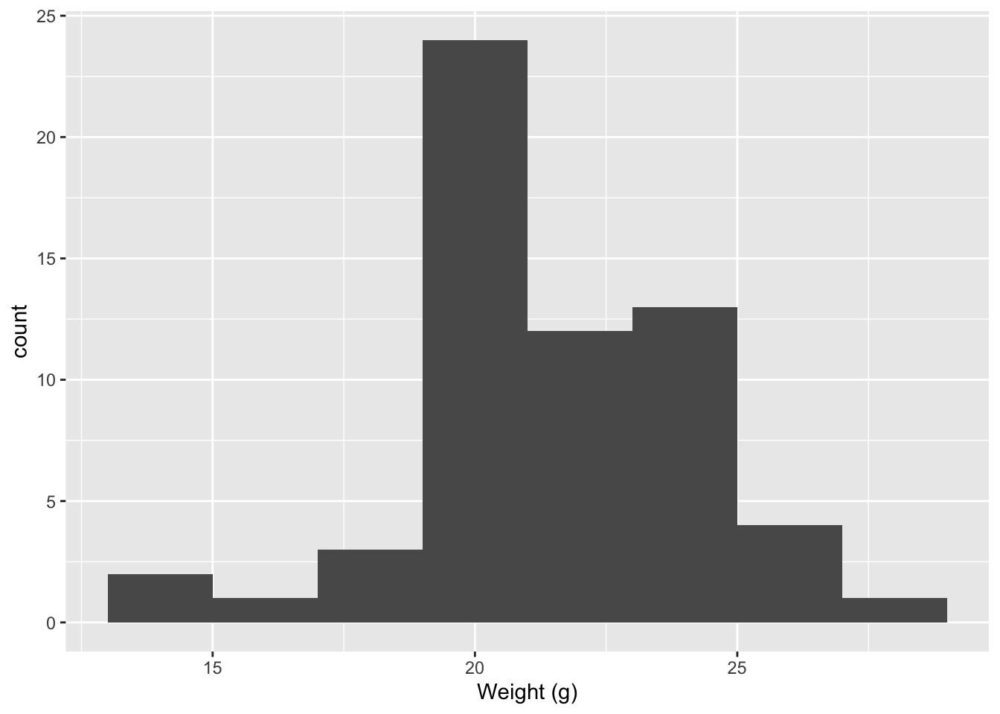

library(tidyverse)
library(janitor)
library(webexercises)Workshop 2 - Exploratory Data Analysis - Extension
Using what we learnt in the Exploratory Data Analysis chapter, we will now explore our skills using various case studies to answer some questions.
To recap…
TERMINOLOGY !
We learnt about 4 types of data, within 2 different groups.
Quantitative/Numerical data
Data that can be measured and expressed numerically. It can be further classified into discrete and continuous data.
Discrete data: Data that can only take specific values, often counted. Examples include the number of students in a class or the number of cars in a parking lot.
Continuous data: Data that can take any value within a range, often measured. Examples include height and temperature.

Qualitative/Categorical data
Data that can be divided into categories or groups. It can be further classified into nominal and ordinal data.
Nominal data: Data that represents categories without any inherent order. Examples include; eye color, and types of fruits.
Ordinal data: Data that represents categories with a meaningful order. Examples include education level, satisfaction ratings, and size of clothing.

Summary Statistics
Summary Statistics are used to summarise and describe the main features of a dataset. They provide a quick overview of the data, allowing us to understand its central tendency, variability, and distribution.
Measures of averages:
Mean
The total of all the values divided by the number of values.
Median
The middle value when the data is arranged in order.
Mode
The value that occurs most often.
Measures of spread:
Range
The difference between the largest and smallest values.
Standard deviation
A measure of how spread out the values are around the mean.
Our mean and our standard deviation are the most commonly used summary statistics. The mean gives us an idea of the central tendency of the data, while the standard deviation tells us how much the data varies from the mean.
Skewness
Checking Data
Let’s use what we’ve learnt using a dataset.

Meet Apodemus sylvaticus, the wood mouse. Apodemus sylvaticus can often be found with the parasite, gastrointestinal roundworm, Heligmosomoides polygyrus.
We have a dataset where researchers took a sample of 60 different Apodemus sylvaticus, checked their (i) sex, (ii) weight, and (iii) the count of parasites present.
Let’s first read in this dataset, found in data/mouse_parasite_counts.csv.
Before we do this, as you’ll remember, you’ll need a package to do this. If you rememeber from earlier (), we used the function, read_csv(), this is from the packagereadr. However readr, is part of the tidyverse package, which actually contains A LOT. Read about this in one of the appendices.
If the tidyverse() package is installed, you should be able to read in the dataset.
mice_parasites <- read_csv("data/mouse_parasite_counts.csv")Let’s use a bit about what we learnt earlier with checking the data. We played with finding out about the data and2 split them into 3 different categories: (i) Dimensions/Size, (ii). Structure/variable names, (iii). Viewing the actual data, and (iv) starting to summarise the data.
# (1). Dimensions/Size:
nrow(mice_parasites) # number of rows, Base R
ncol(mice_parasites) # number of columns, Base R
# (2). Structure/Variable Names:
colnames(mice_parasites) # variable names, Base R
str(mice_parasites) # summary of the data structure, Base R
glimpse(mice_parasites) # summary of the data structure, tidyverse
# (3). Viewing the Actual Data:
head(mice_parasites) # first 6 rows, Base R
tail(mice_parasites) # last 6 rows, Base R
# (4). Starting to Summarise the Data:
summary(mice_parasites) # summary of the data, Base R
tabyl(mice_parasites, sex) # frequency, janitor
NoteDimensions/Size
nrow(mice_parasites) # number of rows, Base R[1] 60ncol(mice_parasites) # number of columns, Base R[1] 4
NoteStructure/Variable Names
colnames(mice_parasites) # variable names, Base R[1] "host_id" "sex" "weight_g" "parasite_count"str(mice_parasites) # summary of the data structure, Base Rspc_tbl_ [60 × 4] (S3: spec_tbl_df/tbl_df/tbl/data.frame)
$ host_id : chr [1:60] "H001" "H002" "H003" "H004" ...
$ sex : chr [1:60] "F" "M" "M" "M" ...
$ weight_g : num [1:60] 24.8 21 22.2 25.8 22.9 21.9 19.4 24.7 20.5 23.7 ...
$ parasite_count: num [1:60] 0 0 0 0 0 0 0 8 1 0 ...
- attr(*, "spec")=
.. cols(
.. host_id = col_character(),
.. sex = col_character(),
.. weight_g = col_double(),
.. parasite_count = col_double()
.. )
- attr(*, "problems")=<pointer: 0x9101e4040> glimpse(mice_parasites) # summary of the data structure, tidyverseRows: 60
Columns: 4
$ host_id <chr> "H001", "H002", "H003", "H004", "H005", "H006", "H007",…
$ sex <chr> "F", "M", "M", "M", "M", "M", "M", "M", "F", "M", "F", …
$ weight_g <dbl> 24.8, 21.0, 22.2, 25.8, 22.9, 21.9, 19.4, 24.7, 20.5, 2…
$ parasite_count <dbl> 0, 0, 0, 0, 0, 0, 0, 8, 1, 0, 0, 5, 0, 0, 1, 0, 0, 1, 2…
NoteViewing the Actual Data
head(mice_parasites) # first 6 rows, Base R# A tibble: 6 × 4
host_id sex weight_g parasite_count
<chr> <chr> <dbl> <dbl>
1 H001 F 24.8 0
2 H002 M 21 0
3 H003 M 22.2 0
4 H004 M 25.8 0
5 H005 M 22.9 0
6 H006 M 21.9 0tail(mice_parasites) # last 6 rows, Base R# A tibble: 6 × 4
host_id sex weight_g parasite_count
<chr> <chr> <dbl> <dbl>
1 H055 F 18.9 1
2 H056 M 24.1 0
3 H057 M 20.3 1
4 H058 F 20.7 0
5 H059 M 25.8 2
6 H060 M 20.3 4
NoteStarting to Summarise the Data
summary(mice_parasites) # summary of the data, Base R host_id sex weight_g parasite_count
Length :60 Length :60 Min. :13.00 Min. : 0.000
N.unique :60 N.unique : 2 1st Qu.:20.00 1st Qu.: 0.000
N.blank : 0 N.blank : 0 Median :21.05 Median : 0.500
Min.nchar: 4 Min.nchar: 1 Mean :21.55 Mean : 3.417
Max.nchar: 4 Max.nchar: 1 3rd Qu.:23.40 3rd Qu.: 4.000
Max. :28.20 Max. :27.000 tabyl(mice_parasites, sex) # frequency, janitor sex n percent
F 26 0.4333333
M 34 0.5666667Have a little run of the functions, then answer the following questions.
1. How many rows does the dataset contain? In this case, it will tell us how many different samples of Apodemus sylvaticus were taken.
2. How many variables (columns) are in the dataset? In this case, it will tell us how many different measurements were taken for each sample.
3. Which function would you use to see the first few rows of the data?
4. Which package does glimpse() come from?
5. What is tabyl() used for?
6. Which package is tabyl() from?
Using Histograms to Visualise the Data
ggplot(mice_parasites, aes(x = parasite_count)) +
geom_histogram(binwidth = 1, fill = "lightblue", colour = "black") 
Early on, what can we tell about where the data is concentrated? Is it skewed? If so, in which direction?
Summary / Description Statistics
As described above, we learnt about the Mean, Standard Deviation, Median, Mode, Range, and Skewness. Let’s calculate some of these for the parasite_count variable.
In R, we learnt about the group_by and summarise functions.
mice_parasites_sex_summary <- mice_parasites %>%
group_by(sex) %>%
summarise(
n = n(),
mean_parasite_count = mean(parasite_count))
mice_parasites_sex_summary# A tibble: 2 × 3
sex n mean_parasite_count
<chr> <int> <dbl>
1 F 26 4.08
2 M 34 2.91We are able to interpret a little bit from this; the mean parasite count for male and female mice. Like how parasite count differs by sex. Please answer the following questions
1. What’s this saying about how parasite counts differs by sex
If we look at sex, we can tell it’s higher in a certain sex. We can also look at the mean parasite count by weight. This is a little different though. Going back to knowing our 4 different variables in our different categories. How we can list the 4 different variables we have?
To help you out, lets run this code again:
colnames(mice_parasites) # variable names, Base R[1] "host_id" "sex" "weight_g" "parasite_count"Our output shows the four things that were measured:
“host_id”, “sex”, “weight_g”, “parasite_count”
Categorise each of these variables:
“host_id”
“sex”
“weight_g”
“parasite_count”
Now that we know what type of data we have, we can use the appropriate summary statistics to describe the weight.
If you completed the questions above, you would see that weight_g is a continuous variable. Unlike sex, which is categorical, we can’t summarise weight into two simple categories like males and females — instead we can first use the mean to describe it.
mice_parasites_weight_summary <- mice_parasites %>%
summarise(
mean_weight = mean(weight_g),
mean_parasite_count = mean(parasite_count),
)
mice_parasites_weight_summary# A tibble: 1 × 2
mean_weight mean_parasite_count
<dbl> <dbl>
1 21.5 3.42Although this shows something, it’s hard to tell what trend there really is just from these numbers. One thing we can do instead is visualise the data.
We can first use the histogram we have already learnt about..
# Distribution of weight on its own
ggplot(mice_parasites, aes(x = weight_g)) +
geom_histogram(binwidth = 2) +
labs(x = "Weight (g)")
So, from this plot - although we cannot infer anything about parasite count, we can tell that more mice are in the 20-30g range than in the 30-40g range, or below 20g, this makes sense by looking at our mice_parasites_weight_summary table above.
We still have a bit more to look at, we have looked at the mean in multiple different corners, but we haven’t looked at the other factors mentioned. We understand what the mean shows, now lets look at what everything else shows.
Like earlier, and in the main workbook, we can use the summarise() function to also calculate the median, mode, range and standard deviation, and range of these variables.
We learnt in the main workbook, that the standard deviation can simply be calculated using the sd() function, and median can be calculated using the median() function.
mice_parasites_weight_summary <- mice_parasites %>%
summarise(
median_weight = median(weight_g),
mean_weight = mean(weight_g),
sd_weight = sd(weight_g),
median_parasite_count = median(parasite_count),
mean_parasite_count = mean(parasite_count),
sd_parasite_count = sd(parasite_count),
)
mice_parasites_weight_summary# A tibble: 1 × 6
median_weight mean_weight sd_weight median_parasite_count mean_parasite_count
<dbl> <dbl> <dbl> <dbl> <dbl>
1 21.0 21.5 2.73 0.5 3.42
# ℹ 1 more variable: sd_parasite_count <dbl>Remembering what the definition of each of these terms are, what can we tell about the data?
1. Comparing the mean (21.5) and median (21.0) for weight_g, what can we say about its distribution?
2. Comparing the mean (3.42) and median (0.5) for parasite_count, what can we say about its distribution?
3. Why is the mean so much higher than the median for parasite_count?
4. The standard deviation for parasite_count (6.17) is larger than its mean (3.42). What does this suggest?
5. Based on the summary statistics, which variable would the mean and SD alone summarise more reliably?
6. What would be a good next step before drawing firm conclusions about parasite_count from summary statistics alone?
Hopefully now we’ve got a better understanding of the mean, median and SD. But we still have some remaining; Mode, Range and Skewness, as these aren’t commonly used IN summarise.
There are a couple of ways to calclulate the range. One of them is what we learnt in the main workbook, as the range is the largest number - the smallest number, we could just do this.
range <- max(mice_parasites$parasite_count)-min(mice_parasites$parasite_count)
range[1] 27There is also a function, we can use. this is the diff() function from base R, which calculates the difference between the maximum and minimum values of a variable.
diff(range(mice_parasites$parasite_count))[1] 27Next lets look at the mode. As we learnt, the quickest way to do this is to write a small function.
get_mode <- function(x) {
freq_table <- table(x)
names(freq_table)[freq_table == max(freq_table)]
}
get_mode(mice_parasites$parasite_count)[1] "0"but if you want to load up another package and function, you can, don’t forget to install packages in the console before you load them up.
library(DescTools)
Mode(mice_parasites$parasite_count)[1] 0
attr(,"freq")
[1] 30Our mode uis 0, and desc tools shows 30 of our samples are 0
Now let’s put this in one big summary statistics table!
mice_parasites_full_summary <- mice_parasites %>%
summarise(
mean_weight = mean(weight_g),
median_weight = median(weight_g),
sd_weight = sd(weight_g),
range_weight = diff(range(weight_g)),
mean_parasite_count = mean(parasite_count),
median_parasite_count = median(parasite_count),
mode_parasite_count = Mode(parasite_count),
sd_parasite_count = sd(parasite_count),
range_parasite_count = diff(range(parasite_count))
)
library(kableExtra)
Attaching package: 'kableExtra'The following object is masked from 'package:dplyr':
group_rowskable(mice_parasites_full_summary, digits = 2) %>%
kable_styling()| mean_weight | median_weight | sd_weight | range_weight | mean_parasite_count | median_parasite_count | mode_parasite_count | sd_parasite_count | range_parasite_count |
|---|---|---|---|---|---|---|---|---|
| 21.55 | 21.05 | 2.73 | 15.2 | 3.42 | 0.5 | 0 | 6.17 | 27 |
The End
If you made it to here, you should be pretty certain on how everything syummary statistics works. We will soon go onto how things move together, but as an additional let’s look at this.
# Relationship between weight and parasite count
ggplot(mice_parasites, aes(x = weight_g, y = parasite_count)) +
geom_point() +
labs(x = "Weight (g)", y = "Parasite count")
What can we tell from this plot?